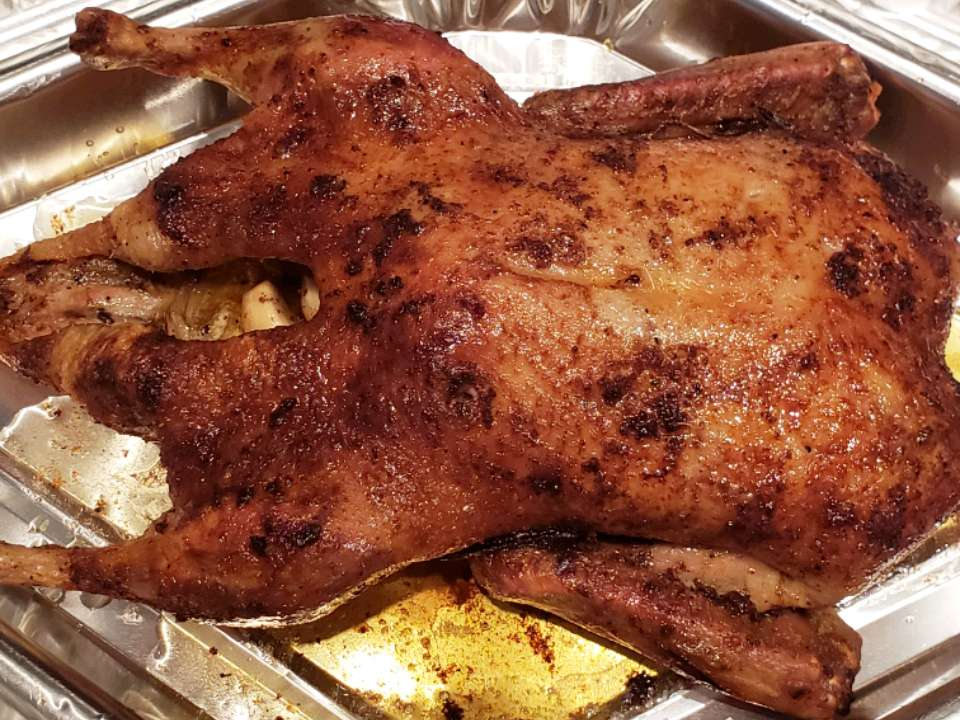

Roasted Duck

Description
I know from experience that duck is like chicken, but somehow better. I would be remiss if I didn't include some sort of duck recipe on my page.
This recipe for roasted duck, courtesy of user Rhonda Brock Fuller on Allrecipes, may not be as exotic as the other recipes on my page, but it doesn't need to be, as duck speaks for itself.
Ingredients
- 2 teaspoons paprika
- 2 teaspoons salt
- 1 teaspoon black pepper
- 2 cans ginger beer
- 1 (5 pound) whole duck
- ½ cup butter, melted, divided
Steps
- Preheat oven to 375° F (190° C).
- Combine paprika, salt, and pepper in small bowl. Rub spice mixture onto skin of duck. Place duck in roasting pan.
- Roast in preheated oven for 1 hour.
- Spoon ¼ cup melted butter over duck and continue cooking for 45 more minutes.
- Spoon remaining ¼ cup melted butter over duck and cook until golden brown, about 15 more minutes.